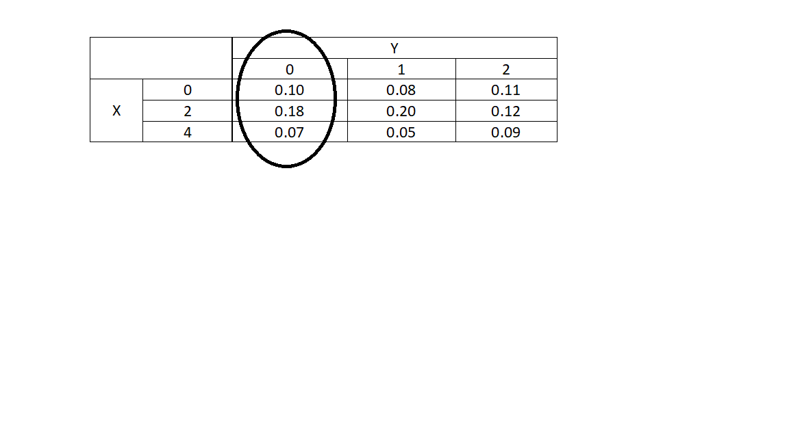

14 Multivariate Distributions
14.1 Objectives
Define (and distinguish between) the terms joint probability mass/density function, marginal pmf/pdf, and conditional pmf/pdf.
Given a joint pmf/pdf, obtain the marginal and conditional pmfs/pdfs.
Use joint, marginal and conditional pmfs/pdfs to obtain probabilities.
14.2 Multivariate distributions
Multivariate situations are the more common in practice. We are often dealing with more than one variable. We have seen this in the previous block of material and will see multivariate distributions in the remainder of the book.
The basic idea is that we want to determine the relationship between two or more variables to include variable(s) conditional on variables.
14.3 Joint probability
Thus far, we have only considered situations involving one random variable. In some cases, we might be concerned with the behavior of multiple random variables simultaneously. This chapter and the next are dedicated to jointly distributed random variables.
14.3.1 Discrete random variables
In the discrete case, joint probability is described by the joint probability mass function. In the bivariate case, suppose \(X\) and \(Y\) are discrete random variables. The joint pmf is given by \(f_{X,Y}(x,y)\) and represents \(\mbox{P}(X=x,Y=y) = \mbox{P}(X=x \cap Y=y)\). Note: it is common in statistical and probability models to use a comma to represent and, in fact the select() function in tidyverse does this.
The same rules of probability apply to the joint pmf. Each value of \(f\) must be between 0 and 1, and the total probability must sum to 1: \[ \sum_{x\in S_X}\sum_{y \in S_Y} f_{X,Y}(x,y) = 1 \] This notation means that if we sum the joint probabilities over all values of the random variables \(X\) and \(Y\) we will get 1.
If given a joint pmf, one can obtain the marginal pmf of individual variables. The marginal pmf is simply the mass function of an individual random variable, summing over the possible values of all the other variables. In the bivariate case, the marginal pmf of \(X\), \(f_X(x)\) is found by: \[ f_X(x)=\sum_{y \in S_Y}f_{X,Y}(x,y) \]
Notice that in the above summation, we summed over only the \(y\) values.
Similarly, \[ f_Y(y)=\sum_{x \in S_X}f_{X,Y}(x,y) \]
The marginal pmf must be distinguished from the conditional pmf. The conditional pmf describes a discrete random variable given other random variables have taken particular values. In the bivariate case, the conditional pmf of \(X\), given \(Y=y\), is denoted as \(f_{X|Y=y}(x)\) and is found by: \[ f_{X|Y=y}(x)=\mbox{P}(X=x|Y=y)=\frac{\mbox{P}(X=x,Y=y)}{\mbox{P}(Y=y)}=\frac{f_{X,Y}(x,y)}{f_Y(y)} \]
Example:
Let \(X\) and \(Y\) be discrete random variables with joint pmf below.
\[ \begin{array}{cc|ccc} & & & \textbf{Y} & \\ & & 0 & 1 & 2 \\ & \hline 0 & 0.10 & 0.08 & 0.11 \\\textbf{X} &2 & 0.18 & 0.20 & 0.12 \\ & 4 & 0.07 & 0.05 & 0.09 \end{array} \]
Find the marginal pmfs of \(X\) and \(Y\).
Find \(f_{X|Y=0}(x)\) and \(f_{Y|X=2}(y)\).
The marginal pmfs can be found by summing across the other variable. So, to find \(f_X(x)\), we simply sum across the rows:
\[ f_X(x)=\left\{\begin{array}{ll} 0.10+0.08+0.11, & x=0 \\ 0.18+0.20+0.12, & x=2 \\ 0.07+0.05+0.09, & x=4 \\ 0, & \mbox{otherwise} \end{array}\right. = \left\{\begin{array}{ll} 0.29, & x=0 \\ 0.50, & x=2 \\ 0.21, & x=4 \\ 0, & \mbox{otherwise} \end{array}\right. \]
Similarly, \(f_Y(y)\) can be found by summing down the columns of the joint pmf: \[ f_Y(y)=\left\{\begin{array}{ll} 0.35, & y=0 \\ 0.33, & y=1 \\ 0.32, & y=2 \\ 0, & \mbox{otherwise} \end{array}\right. \]
To find the conditional pmf of \(X\) given \(Y=0\), it helps to recognize that once we know that \(Y=0\), the overall sample space has changed. Now the only outcomes we consider are in the first column (corresponding to \(Y=0\)):
We are looking for the distribution of \(X\) within the circled area. So, we need to find the proportion of probability assigned to each outcome of \(X\). Mathematically: \[ f_{X|Y=0}(x)=\mbox{P}(X=x|Y=0)=\frac{\mbox{P}(X=x,Y=0)}{\mbox{P}(Y=0)}=\frac{f_{X,Y}(x,0)}{f_Y(0)} \]
Above, we found the marginal pmf of \(Y\). We know that \(f_Y(0)=0.35\). So, \[ \renewcommand{\arraystretch}{1.25} f_{X|Y=0}(x)=\left\{\begin{array}{ll} \frac{0.10}{0.35}, & x=0 \\ \frac{0.18}{0.35}, & x=2 \\ \frac{0.07}{0.35}, & x=4 \\ 0, & \mbox{otherwise} \end{array}\right. = \left\{\begin{array}{ll} 0.286, & x=0 \\ 0.514, & x=2 \\ 0.200, & x=4 \\ 0, & \mbox{otherwise} \end{array}\right. \]
Note that the probabilities in this pmf sum to 1. It is always wise to confirm this to ensure we did not make a simple computational error along the way.
Similarly, we can find \(f_{Y|X=2}(y)\). First we recognize that \(f_X(2)=0.5\). \[ \renewcommand{\arraystretch}{1.25} f_{Y|X=2}(x)=\left\{\begin{array}{ll} \frac{0.18}{0.50}, & y=0 \\ \frac{0.20}{0.50}, & y=1 \\ \frac{0.12}{0.50}, & y=2 \\ 0, & \mbox{otherwise} \end{array}\right. = \left\{\begin{array}{ll} 0.36, & y=0 \\ 0.40, & y=1 \\ 0.24, & y=2 \\ 0, & \mbox{otherwise} \end{array}\right. \]
Together, these pmfs can be used to find relevant probabilities. For example, see the homework exercises.
14.3.2 Continuous random variables
Many of the ideas above for discrete random variables also apply to the case of multiple continuous random variables. Suppose \(X\) and \(Y\) are continuous random variables. Their joint probability is described by the joint probability density function. As in the discrete case, the joint pdf is represented by \(f_{X,Y}(x,y)\). Recall that while pmfs return probabilities, pdfs return densities, which are not equivalent to probabilities. In order to obtain probability from a pdf, one has to integrate the pdf across the applicable subset of the domain.
The rules of a joint pdf are analogous to the univariate case. For all \(x\) and \(y\), \(f_{X,Y}(x,y)\geq 0\) and the probability must sum to one: \[ \int_{S_X}\int_{S_Y}f_{X,Y}(x,y)\mbox{d}y \mbox{d}x = 1 \]
The marginal pdf is the density function of an individual random variable, integrating out all others. In the bivariate case, the marginal pdf of \(X\), \(f_X(x)\), is found by summing, integrating, across the other variable: \[ f_X(x)=\int_{S_Y}f_{X,Y}(x,y)\mbox{d}y \]
Similarly, \[ f_Y(y)=\int_{S_X}f_{X,Y}(x,y)\mbox{d}y \]
The conditional pdf of \(X\), given \(Y=y\) is denoted as \(f_{X|Y=y}(x)\) and is found in the same way as in the discrete case: \[ f_{X|Y=y}(x)=\frac{f_{X,Y}(x,y)}{f_Y(y)} \]
Similarly, \[ f_{Y|X=x}(y)=\frac{f_{X,Y}(x,y)}{f_X(x)} \]
Note that we are working with the pdf and not probabilities in this case. That is because we can’t determine the probability at a point for a continuous random variable. Thus we work with conditional pdfs to find probabilities for conditional statements.
Example:
Let \(X\) and \(Y\) be continuous random variables with joint pdf:
\[ f_{X,Y}(x,y)=xy \] for \(0\leq x \leq 2\) and \(0 \leq y \leq 1\).
- Verify \(f\) is a valid joint pdf.
We need to ensure the total volume under the pdf is 1. Note that the double integral with constant limits of integration is just like doing single integrals. We just treat the other variable as a constant. In this book we will not work with limits of integration that have variables in them, this is the material of Calc III.
For our simple case of constant limits of integration, the order of integration does not matter. We will arbitrarily integrate \(x\) first, treating \(y\) as a constant. Then integrate with respect to \(y\).
\[ \int_0^1 \int_0^2 xy \mbox{d}x \mbox{d}y = \int_0^1 \frac{x^2y}{2}\bigg|_0^2 \mbox{d}y = \int_0^1 2y\mbox{d}y = y^2\bigg|_0^1 = 1 \]
Using R to do this requires a new package cubature. You can install it from RStudio package tab or the command line using install.packages("cubature"). Then we can use it as follows:
library(cubature) # load the package "cubature"f <- function(x) { (x[1] * x[2]) } # "x" is vector
adaptIntegrate(f, lowerLimit = c(0, 0), upperLimit = c(1, 2))$integral
[1] 1
$error
[1] 0
$functionEvaluations
[1] 17
$returnCode
[1] 0Notice the function adaptIntegrate returned four objects. You can read the help menu to learn more about them but we are only interested in the result contained in the object integral.
- Find \(\mbox{P}(X > 1, Y \leq 0.5)\). \[ \mbox{P}(X>1,Y\leq 0.5)=\int_0^{0.5}\int_1^2 xy \mbox{d}x \mbox{d}y = \int_0^{0.5} \frac{x^2 y}{2}\bigg|_1^2 \mbox{d}y = \int_0^{0.5}2y - \frac{y}{2}\mbox{d}y \] \[ = \frac{3y^2}{4}\bigg|_0^{0.5}=0.1875 \]
f <- function(x) { (x[1] * x[2]) } # "x" is vector
adaptIntegrate(f, lowerLimit = c(1, 0), upperLimit = c(2, 1/2))$integral
[1] 0.1875
$error
[1] 2.775558e-17
$functionEvaluations
[1] 17
$returnCode
[1] 0- Find the marginal pdfs of \(X\) and \(Y\). \[ f_X(x)=\int_0^1 xy \mbox{d}y = \frac{xy^2}{2}\bigg|_0^1=\frac{x}{2} \]
where \(0 \leq x \leq 2\).
\[ f_Y(y)=\int_0^2 xy \mbox{d}x = \frac{x^2y}{2}\bigg|_0^2= 2y \]
where \(0 \leq y \leq 1\).
- Find the conditional pdfs of \(X|Y=y\) and \(Y|X=x\). \[ f_{X|Y=y}(x)=\frac{f_{X,Y}(x,y)}{f_Y(y)}=\frac{xy}{2y}=\frac{x}{2} \]
where \(0 \leq x \leq 2\).
Similarly, \[ f_{Y|X=x}(y)=\frac{f_{X,Y}(x,y)}{f_X(x)}=\frac{xy}{\frac{x}{2}}=2y\]
where \(0 \leq y \leq 1\).